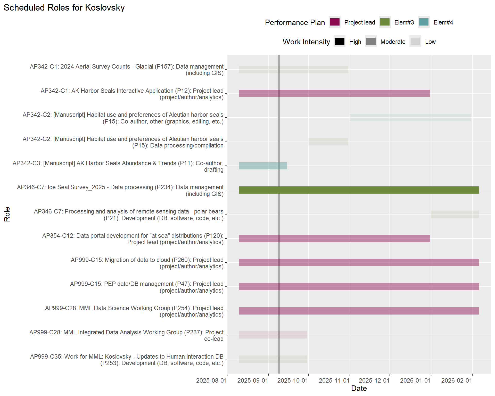
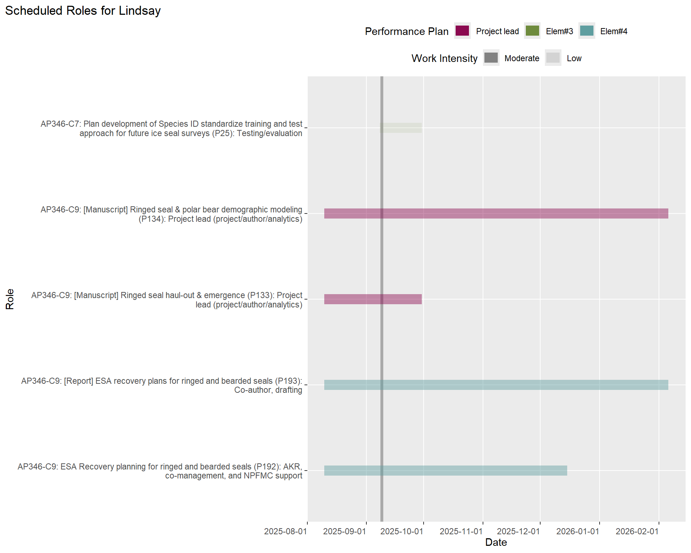

| Project | Role | Staff | Planned End Date |
|---|---|---|---|
| AP 342: 2024 Aerial Survey Counts - Glacial (P157) | Data management (including GIS) (R756) | Koslovsky | 2024-10-11 |
PEP Scheduling Report
This report was generated on 2024-10-01.
Introduction
The information in this report represents the outstanding and upcoming work for PEP staff over the next 180 days. The intent of this information is to help support cross-project planning and communication.
Work Due Soon
The following table lists the actions that will be due within the next 10 days in the DB.
Overdue Work
The following table lists the actions that are overdue in the DB.
[1] "Hooray!! No overdue work!"Planned Work by Action Lead
Today’s date is shown as a grey vertical line on the figure.
Brady

Christman

Conn

Jansen

Koslovsky

London

Richmond

Walcott

Ziel

Planned Work by Project
For actions where there is no start date assigned, an anticipated start date of 15 days before the planned end date has been estimated. Today’s date is shown as a grey vertical line on the figure.
Harbor seals (AP 342)
Aerial surveys of harbor seals in Alaska (C1)


Harbor seal reporting (C17)

Other (AP 999)
Program data management (C15)


Working group memberships (C28)


Toolbox (AP 354)
Integrating diverse data sources to determine seasonal density distributions of protected species (C12)


UAS body condition (AP 356)
Phase III: UAS field tests/data collection and analysis/reporting (C14)

Manuscripts
The following tables list the actions associated with each planned manuscript.
Bearded seal “at sea” distributions (P37)
| Role | Staff | Planned End Date | Status |
|---|---|---|---|
| Analytics lead (A232) | Conn | 2025-01-01 | In progress |
| Lead author (A351) | Conn | 2025-01-01 | In progress |
| Project lead (A634) | Conn | 2025-01-01 | In progress |
Reports
The following tables list the actions associated with each planned report.
NA
| Role | Staff | Planned End Date | Status |
|---|
| Role | Staff | Planned End Date | Status |
|---|
Performance Plan Elements (FY25)
The following tables list the roles for all PEP staff by performance plan element.
Brady
| Element | Project | Role | Planned Start Date | Planned End Date | Status | Work Intensity |
|---|---|---|---|---|---|---|
| Project lead | AP 342: 2020-2021 Aerial Survey Counts - Glacial (P7) | Project lead (R623) | 2024-08-12 | 2025-05-30 | In progress | NA |
| Element 3 | AP 342: 2020-2021 Aerial Survey Counts - Glacial (P7) | Data processing/compilation (R285) | 2024-09-24 | 2025-04-30 | In progress | NA |
Christman
| Element | Project | Role | Planned Start Date | Planned End Date | Status | Work Intensity |
|---|---|---|---|---|---|---|
| Element 1 | AP 999: PEP Data Days FY25 (P158) | Science team/committee (R744) | 2024-07-16 | 2025-01-09 | In progress | NA |
| Element 3 | AP 342: 2020-2021 Aerial Survey Counts - Glacial (P7) | Data processing/compilation (R753) | 2024-09-24 | 2025-03-31 | In progress | NA |
Conn
| Element | Project | Role | Planned Start Date | Planned End Date | Status | Work Intensity |
|---|---|---|---|---|---|---|
| Project lead | AP 354: [Manuscript] Bearded seal “at sea” distributions (P37) | Project lead (R634) | 2023-01-01 | 2025-01-01 | In progress | Moderate |
| Element 4 | AP 354: [Manuscript] Bearded seal “at sea” distributions (P37) | Lead author (R351) | 2023-01-01 | 2025-01-01 | In progress | Moderate |
| Element 4 | AP 354: [Manuscript] Bearded seal “at sea” distributions (P37) | Analytics lead (R232) | 2023-01-01 | 2025-01-01 | In progress | Moderate |
Jansen
| Element | Project | Role | Planned Start Date | Planned End Date | Status | Work Intensity |
|---|---|---|---|---|---|---|
| Element 1 | AP 999: AFSC TIDE (P162) | NOAA/AFSC working group member (R750) | 2024-10-01 | 2025-09-30 | In progress | NA |
Koslovsky
| Element | Project | Role | Planned Start Date | Planned End Date | Status | Work Intensity |
|---|---|---|---|---|---|---|
| Project lead | AP 342: AK Harbor Seals Interactive Application (P12) | Project lead (R615) | 2024-12-01 | 2025-02-28 | In progress | Moderate |
| Project lead | AP 354: Data portal development for “at sea” distributions (P120) | Project lead (R638) | 2024-12-01 | 2025-02-28 | In progress | Moderate |
| Project lead | AP 999: On-going data and database support for administrative and project needs (P47) | Project lead (R715) | 2024-10-01 | 2025-09-30 | In progress | Low |
| Project lead | AP 999: PEP Dashboard management (P101) | Project lead (R642) | 2024-10-01 | 2025-09-30 | In progress | Low |
| Project lead | AP 999: PEP Data Days FY25 (P158) | Project lead (R731) | 2024-04-01 | 2025-01-31 | In progress | Moderate |
| Element 1 | AP 999: AFSC TIDE (P162) | NOAA/AFSC working group member (R749) | 2024-10-01 | 2025-09-30 | In progress | Low |
| Element 1 | AP 999: NOAA F-SAT/I (P163) | NOAA/AFSC working group member (R751) | 2024-03-01 | 2026-09-30 | In progress | Low |
| Element 3 | AP 342: 2020-2021 Aerial Survey Counts - Glacial (P7) | Data management (including GIS) (R341) | 2024-08-12 | 2024-10-18 | In progress | Low |
| Element 3 | AP 342: 2020-2021 Aerial Survey Counts - Glacial (P7) | Development (DB, software, code, etc.) (R755) | 2025-03-01 | 2025-05-30 | Not yet started | Moderate |
| Element 3 | AP 342: 2024 Aerial Survey Counts - Glacial (P157) | Data management (including GIS) (R756) | 2024-09-30 | 2024-10-11 | In progress | High |
| Element 3 | AP 342: 2024 Aerial Survey Counts - Glacial (P157) | Data processing/compilation (R757) | 2025-08-01 | 2025-09-30 | Not yet started | Low |
| Element 3 | AP 356: Collect imagery of free-ranging seals at the marginal ice zone of the Bering Sea (P44) | Data management (including GIS) (R314) | 2024-06-03 | 2024-12-31 | In progress | Low |
London
| Element | Project | Role | Planned Start Date | Planned End Date | Status | Work Intensity |
|---|---|---|---|---|---|---|
| Element 1 | AP 999: PEP Data Days FY25 (P158) | Science team/committee (R745) | 2024-07-16 | 2025-01-09 | In progress | NA |
Richmond
| Element | Project | Role | Planned Start Date | Planned End Date | Status | Work Intensity |
|---|---|---|---|---|---|---|
| Element 1 | AP 999: PEP Data Days FY25 (P158) | Science team/committee (R746) | 2024-07-16 | 2025-01-09 | In progress | NA |
Walcott
| Element | Project | Role | Planned Start Date | Planned End Date | Status | Work Intensity |
|---|---|---|---|---|---|---|
| Element 1 | AP 999: PEP Data Days FY25 (P158) | Science team/committee (R747) | 2024-07-16 | 2025-01-09 | In progress | NA |
| Element 3 | AP 342: 2020-2021 Aerial Survey Counts - Glacial (P7) | Data processing/compilation (R754) | 2024-09-24 | 2025-03-31 | In progress | NA |
Ziel
| Element | Project | Role | Planned Start Date | Planned End Date | Status | Work Intensity |
|---|---|---|---|---|---|---|
| Element 1 | AP 999: PEP Data Days FY25 (P158) | Science team/committee (R748) | 2024-07-16 | 2025-01-09 | In progress | NA |